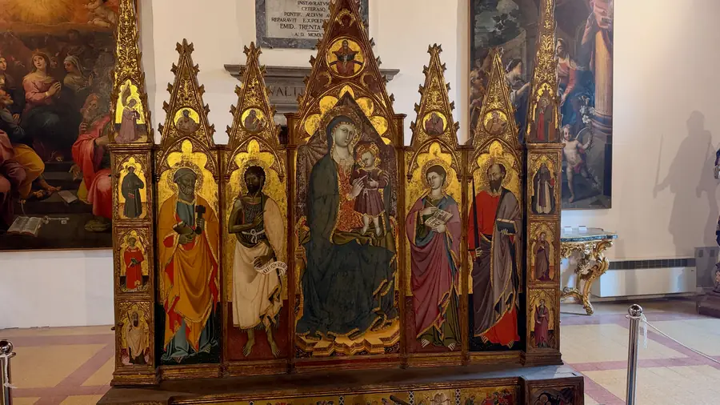
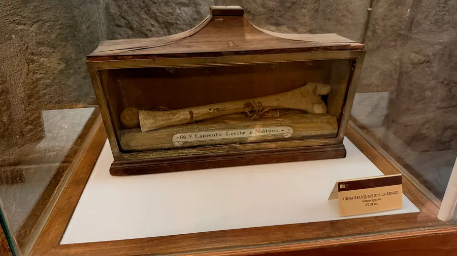
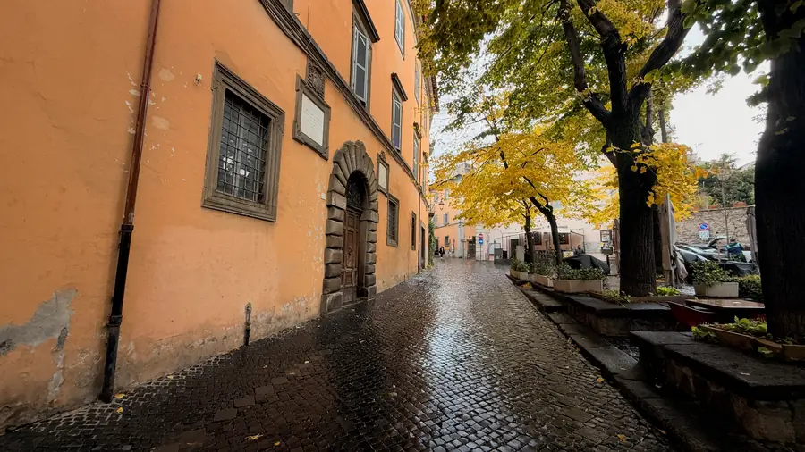

В Витербо шёл дождь. Не ливень, а та итальянская ноябрьская морось, от которой брусчатка блестит, как лакированная, а жёлтые листья прилипают к камням. Мы поднялись на Колле дель Дуомо, холм собора. Это самое старое место в городе: по преданию, сначала тут было святилище этрусков, потом крепость, а в тринадцатом веке сюда пришли папы.
Зачем папам Витербо, спросите вы? В Риме тогда было опасно. Знатные семьи воевали прямо на улицах, толпа могла выгнать и самого папу. А Витербо был верен, богат и хорошо укреплён. Почти четверть века папы жили здесь, и от тех лет осталась лоджия, с которой они благословляли народ: семь стрельчатых арок на тонких сдвоенных колонках, каменное кружево, а сквозь него видно небо.



Здесь же родилось слово «конклав». В тысяча двести шестьдесят восьмом году умер папа Климент Четвёртый, и кардиналы сели выбирать нового. Сидели год. Потом второй. Горожанам это надоело, и они заперли кардиналов в зале на ключ, cum clave. Не помогло. Тогда их посадили на хлеб и воду. Не помогло. Тогда с зала сняли крышу. На тридцать третьем месяце папу всё-таки выбрали, причём человека, который не был кардиналом и вообще находился в Святой земле. А новый папа потом записал правило: впредь запирать сразу.
Я ходил со своей придуманной экскурсией: фотографировал схему и таблички, а в наушниках шёл рассказ. В музее попросил дальше присылать текстом. Читать быстрее, чем слушать, а в музее всегда не хватает времени.


Музей при соборе небольшой, но в нём есть всё сразу. Золотой готический складень: Богородица на троне, по сторонам Пётр, Предтеча, Иоанн Богослов и Павел. По сути, наш деисус, только собранный в одну раму. Маленькая Мадонна на золотом фоне, у Младенца на шее коралловые бусы, а в руке щегол. Мощи святого Лаврентия, архидиакона, которому посвящён здешний собор: кость в деревянном ларце со стеклом и подпись от руки. И римская Артемида Эфесская, та самая, про которую в Деяниях кричали два часа: «Велика Артемида Ефесская!» Теперь она стоит у стены папского дворца, обвешанная своими странными гроздьями, и никто перед ней не кричит.

Две вещи я рассматривал дольше остальных, по работе. Первая: красная риза, сплошь расшитая золотом и серебром, с гербом внизу. Стоял перед витриной и считал стежки, как другой считал бы деньги. Вторая: «Мёртвый Христос», картина тысяча восемьсот семьдесят шестого года. Тело на плите, белая пелена, снятый терновый венец на полу. Это ведь наша плащаница, только написанная маслом. Мы шьём её и выносим в Великую пятницу, а тут она висит в музейном зале, и возле неё так же хочется замолчать.



Вечером вернулись в Тусканию и пошли ужинать туда же, куда в первый вечер. Взяли кьянти. На этикетке оказался зверь, очень похожий на этрусскую Химеру из Ареццо. Мы, конечно, по-прежнему не в Тоскане, но этруски и тут достали.
Завтра последний день с машиной. Хотим успеть в Черветери, к этрусским курганам, а к часу дня надо быть во Фьюмичино.